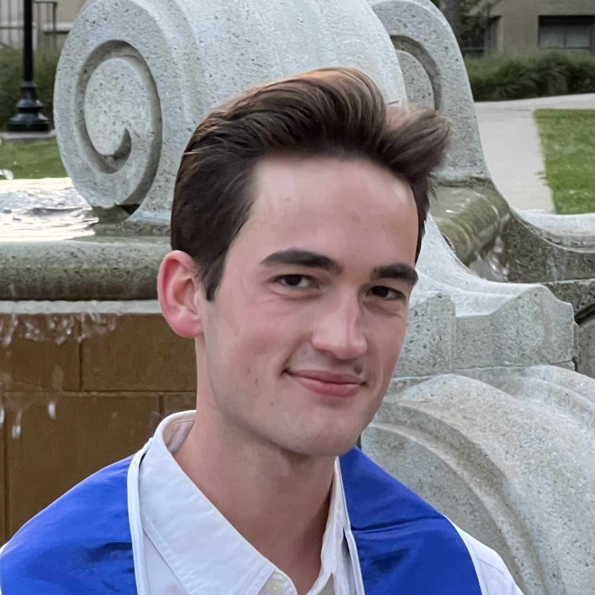

Hi! I'm Joey Zobel (/ˈdʒoʊi ˈzoʊbɫ̩/) (he/him/his). I'm a Ph.D. student in Linguistics at New York University. I work in sociolinguistics and phonetics studying regional variation in North American English. Much of my past sociolinguistic work has been with Appalachian and Southern English, but I'm more broadly interested in how technology and mobility have impacted/are impacting regional variation. I'm also passionate about using new and different quantitative and statistical techniques to understand sociolinguistic theory. Much of this work is motivated by having grown up in a small college town in central Appalachia, and I'm excited to explore how these unique environments interact with broader regional and race- and class-based language patterns in North America as a whole.
In addition to North American English, I've worked with Georgian, Hindi, French, and (in a historical context) Medieval Latin.
When I'm not studying languages, you can find me playing classical piano, singing with the Grace Church Choral Society, listening to Taylor Swift, and/or reading literary fiction!
I received a B.A. in Linguistics from Pomona College in 2025, where I minored in Mathematics and Late Antique–Medieval Studies. At Pomona, I worked with Ernesto R. Gutiérrez Topete, Nicole R. Holliday, Galia Bar-Sever, and Mary Paster, and my senior project was a sociolinguistic analysis of the use of y'all in online discourse.